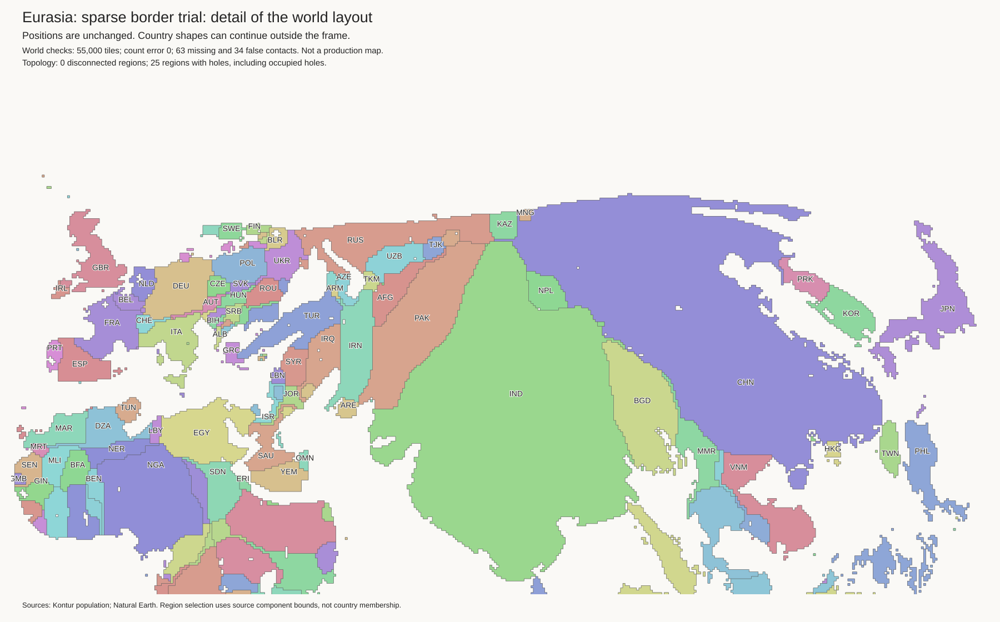
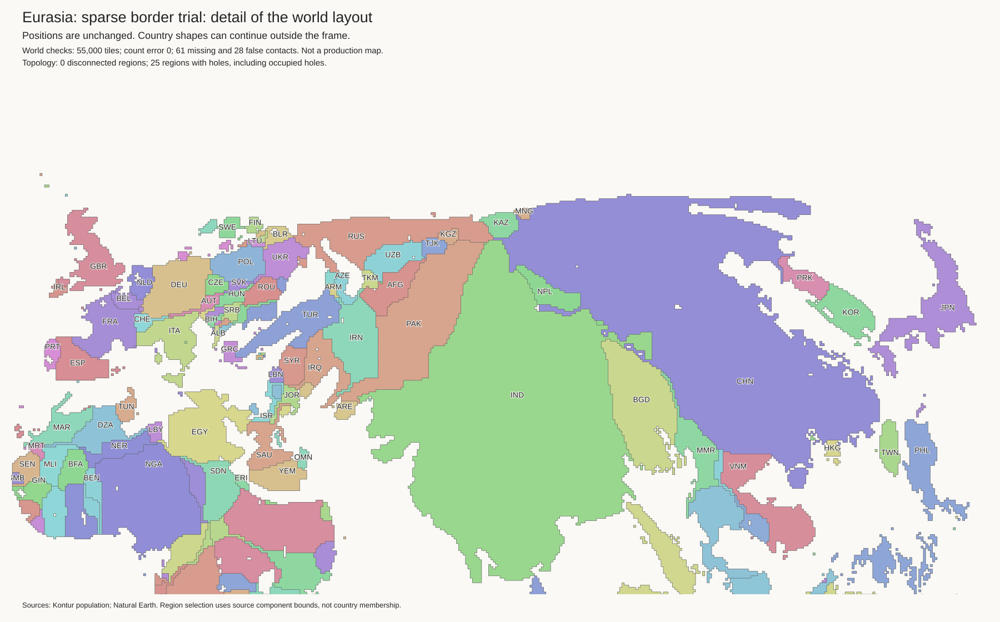
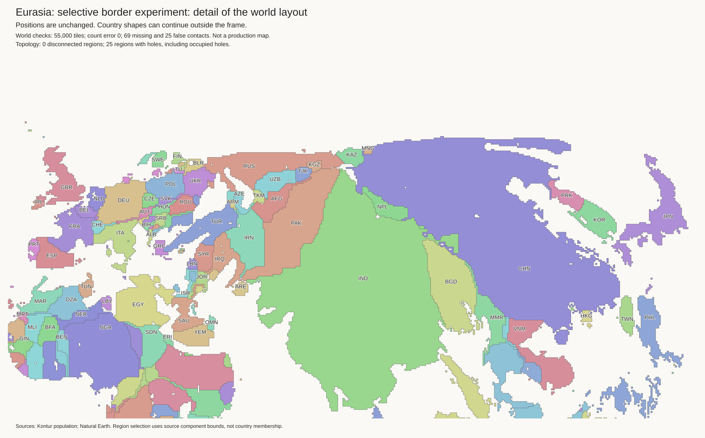

Experiment, not a replacement map. The first tests do not show a benefit from allowing sparse borders to separate. The published H3-MON map is unchanged.
Method, research, and limits · Work log · Starting layout with lakes
The audit measures population in a corridor on both sides of each border. It does not use country-average density. A border is eligible only when both its mean density and its 90th-percentile segment density fall below the test limits. There are no Russia or China exceptions.
The strict limits admit 74 of 348 component pairs. Wider limits admit 98. Kazakhstan–Russia and Mongolia–Russia pass the strict test. China–Russia passes only the wider test. China–North Korea and China–Vietnam do not pass either test.
All runs keep 55,000 population tiles and exact component budgets. Lake cells and immediate shore labels stay fixed. Lakes remain empty space. Independent islands stay fixed. New blank border gaps are experimental separations, not geographic seas or lakes.
Each relaxed run has a control with all existing true contacts protected. Other settings are identical within each pair. Lower shape error is better. This score measures outline overlap after equal-area scaling and centroid alignment; it does not measure relative position.
| Test | Lost existing contacts | Shape error | New enclosed empty cells |
|---|---|---|---|
| Input | 0 | 0.42690 | 0 |
| Strict control | 0 | 0.41934 | 23 |
| Strict relaxed | 1 | 0.41971 | 24 |
| Wider control | 0 | 0.40985 | 35 |
| Wider relaxed | 6 | 0.41016 | 37 |
Both relaxed runs score slightly worse than their controls. Russia improves in both controls without losing an existing contact. China changes little. This is not evidence that border separation helped.


The strict relaxed test also opens Sweden–Finland. This partly undoes the earlier mainland repair. Inspect Europe.
The 400-round relaxed run still scores slightly worse than its matched control. Extra rounds alone do not establish a benefit from separation.
| Test | Lost existing contacts | Shape error | New enclosed empty cells |
|---|---|---|---|
| 400-round control | 0 | 0.39997 | 38 |
| 400-round relaxed | 7 | 0.40038 | 39 |
| Large-component openings, 100 rounds | 8 | 0.40989 | 100 |
| Small-gap control, 100 rounds | 0 | 0.41228 | 24 |
| Small-gap openings, 100 rounds | 3 | 0.41246 | 28 |
The opening phase permits a bounded short-term cost increase before normal refinement. Failed openings restore all changes. This tests a possible search barrier; it does not assume that an opening is useful. These opening trials move only components with at least 500 tiles, but still apply the same population rule.

Russia's outline error falls to 0.38727, versus 0.39105 in the matched wider 100-round control. China is slightly worse. The small Russia gain does not justify 100 newly enclosed empty cells.
Matched small-gap control. Kazakhstan–Russia opens during the initial phase, then reconnects during refinement. Russia's shape score improves slightly more than in the control. China's score is identical. The world score is still slightly worse.
The independent geography audit also finds a detached UAE in the 400-round protected control. An existing false contact is removed, while its true contacts were already missing. Protecting existing true borders does not preserve every current landmass connection. None of these trials replaces the current map.
400-round control: run · shapes · geography.
400-round relaxed: run · shapes · geography.
Large-component openings: run · shapes · geography.
The density rule currently applies to a whole component pair, not to the exact source segment represented by each tile edge. Equal Earth gives approximate distances. H3 centre sampling and short borders add error. With a 50 km corridor, the strict rule admits 67 pairs rather than 74. China–Kazakhstan no longer passes; Kazakhstan–Russia and Mongolia–Russia still pass.
The search uses small local exchanges and fixed guide centres. Larger joint regional moves, source-segment population constraints, and relative-position checks are the next method changes. Also review inherited coast constraints: protecting every old concavity can retain a distorted coastline. Do not increase the number of optional borders merely to force a visible gap.
Population audits: strict, 25 km · wider limits, 25 km · strict, 50 km.
Strict control: run report · shape review · land cells.
Strict relaxed: run report · shape review · land cells.
Wider control: run report · shape review · land cells.
Wider relaxed: run report · shape review · land cells.